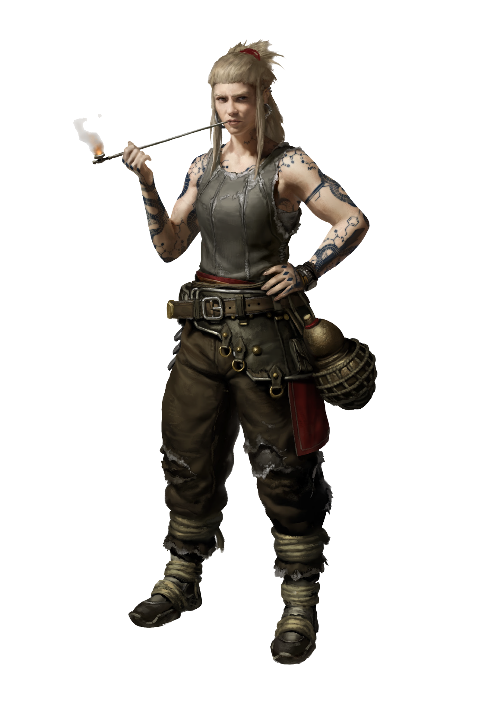

CLAN DOSSIER
Brenni
Got maladies, rheums, soreness? Talk to a Brenni.
Clans of the Moloch pp. 13–15

BLACK PAST
Briefing
“I heard you could help?” The man at the entrance of the hidden backyard apothecary coughed, clutching a belly wound, slamming the door behind him shut to keep out the howling dust storm.
“You’re Gessoth, right? Carrion Bird?” Mads asked, looking up from his work bench. Gessoth nodded desperately. “I was waiting for you. Here, drink this fast!” Mads passed over a sweet-smelling herbal tincture, inspecting Gessoth’s reaction. The Apocalyptic downed the brew in one gulp as commanded and seemed to calm down, his irises slowly expanding. Step one. Gessoth straightened and walked forward in an attempt to thank the healer. The next instant his knees caved in and he dropped onto the floor before Mads’ feet, eyes wide in terror, his body convulsing. Mads acted without hesitation, tightly gripping Gessoth’s throat to keep him from screaming. Then he pushed the poisoned needle into his neck. “Sorry friend, it’s just a quick sting. Nothing personal.”
Black Past
Got maladies, rheums, soreness? Talk to a Brenni. Don’t trust the Spitalians? Talk to a Brenni. Need a fix for some long overdue Burn craving? Just talk to a Brenni, already! Yes, the Office of Hygienics imposes a new regulation every other week and the eggheads patrol the streets, hunting for deviants, but that’s just how things are these days. Not long ago, they toppled the Brenni and pushed them out of their once esteemed position as Justitian’s healers, ushering in the end of the Clan’s glory days - but their function as poison distillers, chiropractors, and medicine men lives on, thriving behind closed doors, in hidden basements and backyard laboratories.
Although they cannot afford to operate in public any longer, their unlicensed services are still in high demand, drawing a clientele from the shadows of Justitian: Carrion Birds and Cartel members alike. It’s these paying customers who keep the Brenni alive and well-off, despite their black past and loss of public recognition. Nested between the Harbor, the Stukov Quarter, and the Steel Monolith, the Clan is imbued by a spirit of recklessness, distinct and headstrong, defiant and confident, part civilian working class, part underground drug dealers, a secret society sprawling in the core of an oppressive system, devoted to the rituals of yore and their quest for their founder’s mythical knowledge.
Underground Apothecaries
In the years following their downfall, the Brenni were forced to take on a new role. The undesirables of the city, the lowlives, the disenfranchised wretches living across Downtown - in fact, everyone who isn’t a citizen - can’t use the Public Hospitals, and instead must skulk into Brennen, where the outcast apothecaries wait to cure their ailments. It might not be as scientifically grounded as the Spitalian doctors proclaim their work to be, but when there are no other options it’s far better than nothing.
Additionally, some of them have turned their medicinal talents towards darker purposes, becoming renowned in the murky alleys and backrooms of Justitian as deadly poisoners for hire. Whenever an Apocalyptic Owl wants to make his knives even more lethal, Brennen is the place he goes.
Surface Level
Not all of the Brenni have remained mired in the trappings of their past, surviving in a realm between antiquated medicine and pseudoscience. Instead, some emerged into civilised society as brewers and distillers, using their Clan’s ancestral understanding of herbs and applying it to the task of creating alcohol. Their bars and taprooms litter the city, with Judges favoring their alcoholic delicacies and the Anabaptists reaching out to exchange techniques and recipes.
Just a single bottle of alcohol from a Brenni business is enough to elevate a Provider’s Harvest celebration to be the talk of the Rubble. Many a Brenni has even secured themselves citizenship through this trade, with Archot rewarding the most talented of their members with access to Uptown.
Contacts
The Brenni have wormed their way into the underworld of Justitian, regularly interacting with the middlemen from the Cartel or the Carrion Birds. If a member of the Clan needs something illegal or illicit done out of sight of the Judges, then they’re sure to at least have some relative who can establish first contact, if they don’t already have a suitable contact themselves.
THE CLAN
Hierarchy & Ranks
Select any rank to read its prerequisites, effect, and equipment.
THE CLAN